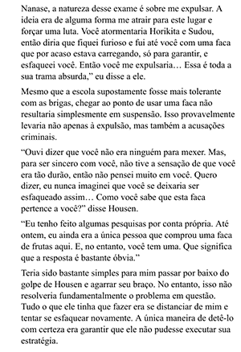

FEITO DA FACA
Ayanokoji tem suspeitas sobre a Ichika ter levado a faca que ele usou para cozinhar para ela, com isso ele pede pra Kei investigar a compra daquela faca Kei depois liga pra Ayanokoji e diz que realmente a faca foi comprada por Ichika, não só isso, mas também que alguém tentou comprar aquela faca mas foi impedido
Ayanokoji guarda essas informações mas não chega alguma conclusão sobre o que está acontecendo.
avançando o volume, House começa a comprar briga com Sudo e Horikita, no meio da luta, Ayanokoji começa a pensar sobre o que está acontecendo por trás desses eventos e quais são os objetivos do House. enquanto ele pensava, House derrota Horikita e Sudo e começa a ameaçar o Ayanokoji.
House tira do bolso uma faca e avança contra o Ayanokoji, porém é impedido pela Nanase, que fica no caminho dele. acontece um diálogo entre House e Nanase, e logo depois House avança para atacar Ayanokoji. naquele momento, Ayanokoji chegou a uma conclusão e deduziu com precisão todos os acontecimentos. enquanto isso, House avança contra o Ayanokoji com a faca. Ayanokoji já sabia que House usaria a faca contra si mesmo. com isso, ele acaba colocando a mão na faca impedindo house de executar o ação desejada.
Ayanokoji diz que ele usaria aquela faca, que anteriormente foi usado por ele, para esfaquear sua perna e acusá-lo do feito, ocasionando numa expulsando. Ayanokoji também descobre que existe um exame entre os primeiros anos com o objetivo de expulsá-lo.
CONCLUSÃO
Ayanokoji tinha poucas informações sobre o que estava acontecendo entre os primeiros anos. a única coisa que ele tinha era que a Ichika comprou uma faca pra ele cozinhar e que House tentou comprar ela. no desenrolar dos eventos em que House derrota Sudo e Horikita, Ayanokoji consegue deduzir todos os eventos complexo diante dele ao olhar a faca que House tirou do bolso, o que reforçou todos essas conclusões do Ayanoji foi o diálogo entre House e Nanase, onde Nanase diz que não queria envolvê-los nisso tudo. no fim, Ayanokoji teve um grande feito de dedução e pensamento rápido.